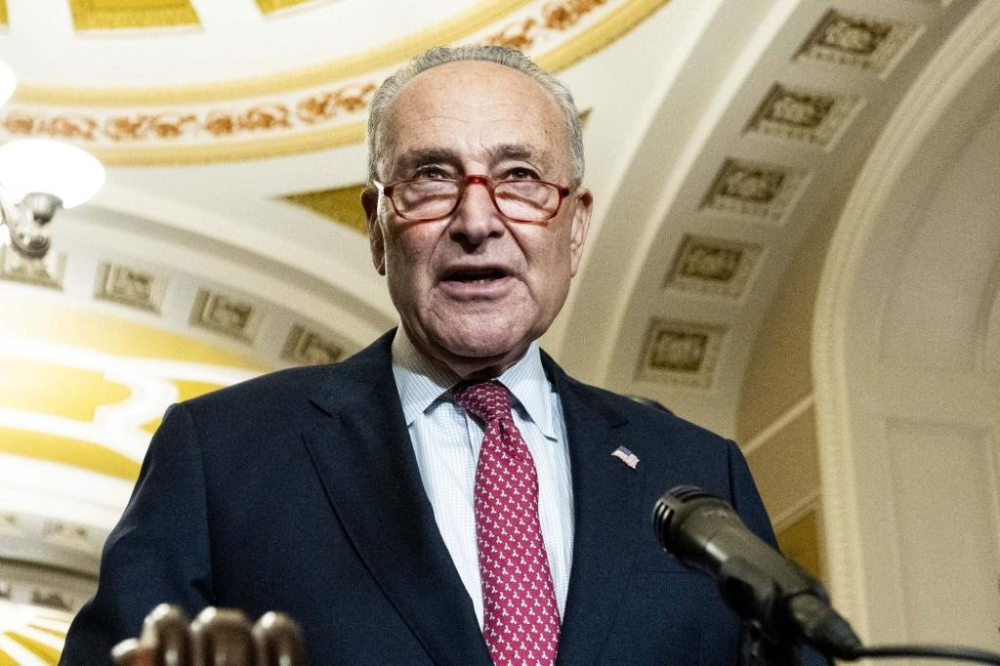

Chuck's sad migrant response: Letters to the EditorThe Issue: Sen. Chuck Schumer’s claim that he’s working to address the migrant crisis in New York. I wholeheartedly agree with your recent editorial condemning Sen. Chuck Schumer and Rep. Hakeem Jeffries’ disappearing act during the immigration crisis that is destroying New York City (“Chuck’s Unhelpful ‘Help.’ ” Sept. 12). Schumer, one of the most powerful Democrats in the country, has demonstrated a history of cowardice ever since being elected Senate Democratic leader. As a practicing Jew, he has failed to call out the poisonous antisemitism and anti-Israel sentiment expressed by members of the Squad, especially by Reps. Rashida Tlaib and Ilhan Omar, while blindly supporting President Biden’s failed policies on the economy, open borders and energy production. On the other hand, Jeffries, who acts like a self-centered elitist, seems to be too busy to worry about mundane issues like immigration. With friends like these, Mayor Adams’ goose is cooked. Anthony Scro Whitestone While President Gerald Ford told New York City to “drop dead” almost 50 years ago, it is Biden who is plunging the knife into the city’s back with his open-borders policy. Adams can’t possibly handle the problem of migrants flooding into the city without more federal help, yet top Democrats Schumer and Jeffries do nothing meaningful to help the city or state. Getting work permits for these people will only serve as a magnet to attract even more illegal migrants to the city, where schools, housing and the NYPD are already overburdened. There is only one solution. Close the border to illegal migrants until meaningful immigration reform is enacted. Sadly, this is something that Biden and progressives like Schumer and Jeffries refuse to do. Mel Young Lawrence This mass invasion of so called “migrants,” in reality illegal immigrants, lies at the feet of the Democratic Party. Biden invited the migrants to cross our border and Adams invited them to come to his city. It seems like they couldn’t figure out that rewarding illegal behavior would just invite more of it. Schumer blames everyone except the real culprit — the city and state’s Democratic politicians, who are more interested in virtue-signaling than the welfare of their constituents. They put their personal welfare over everything. Steve Heitner Middle Island Even though I do not live in New York, I cannot sit by while Schumer, a leader in the Senate, says he cannot help New York — the state he represents — with its immigration problems more than he is currently doing (which in my mind is very little). It’s a slap in the face to New York and to the nation, and the current administration ignores the problem. Harry Ruffalo Phoenix, Ariz. New York’s top Democrats, from Schumer to Jeffries to Gov. Hochul and Adams, are complicit with brainless “Open Borders” Biden in causing this manufactured migrant mess. Defending sanctuary cities and states, granting these so-called “asylum seekers” work permits and doubling down on their ludicrous linkage of border security to “comprehensive immigration reform” is a recipe for further disaster. James Hyland Beechhurst Schumer thinks that discussing the migrant situation at a state fair in Syracuse, hundreds of miles away from New York City, proves he’s “doing something” about this fiasco that is destroying New York. Further, giving illegal migrants work authorization, as Schumer claims he’s working on, would be the worst thing that could happen. It would incentivize millions more to illegally jump the border, which is open because of Biden. Arlene Ross Forest Hills So Schumer and Jeffries are supposedly working behind the scenes to help New York with the migrant crisis? When was the last time a politician did something he was proud of and didn’t boastfully take credit for it? Mike Cavanaugh East Rockaway Want to weigh in on today’s stories? Send your thoughts (along with your full name and city of residence) to letters@nypost.com. Letters are subject to editing for clarity, length, accuracy, and style. |
 |